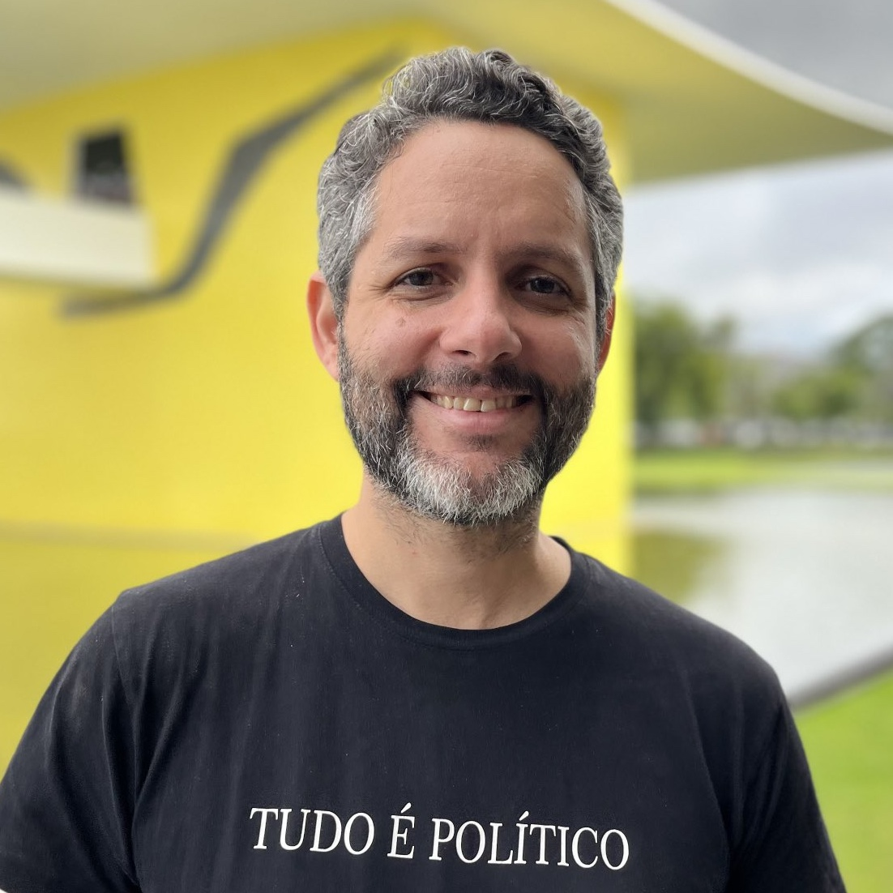

Marcos Davi Silva Steuernagel
Performance & Politics · Brazilian & Latin American Studies
About Me
I am a Brazilian academic living in New York City, where I research, write, and teach on performance and politics, and on Latin American and Brazilian studies. With Diana Taylor, I coedited the multilingual digital books What is Performance Studies? (2015) and Resistant Strategies (2021). My essays have been published in TDR: The Drama Review, Latin American Theatre Review, the Journal of Global South Studies, Theater: Yale's Journal of Criticism, Plays & Reportage, and ephemer: Journal for Performance and Theater Research, among others. I am currently completing a book on the performance, policy, and politics of the Workers' Party in Brazil, from 2002 to 2016.
With fellow scholars from across countries, languages, and disciplines, I've organized panels and working groups exploring how performance — as both practice and methodology — can expand our understanding of our shared histories of coloniality, violence, and inequality across the Américas. For over twenty years, I have taught in Portuguese, English, and Spanish across several countries and continents — at the Universidade Estadual do Paraná (Brazil), New York University, New York University Abu Dhabi, the University of Colorado Boulder, and The New School.
Sou um professor e pesquisador brasileiro radicado em Nova York, onde atuo nas áreas de performance e política, estudos latino-americanos e estudos brasileiros. Com Diana Taylor, coeditei os livros digitais multilíngues O que são os estudos da performance? (2015) e Estratégias resistentes (2021) e meus artigos foram publicados em TDR: The Drama Review, Latin American Theatre Review, Journal of Global South Studies, Theater: Yale's Journal of Criticism, Plays & Reportage e ephemer: Journal for Performance and Theater Research, entre outros. Atualmente estou terminando um livro sobre a performance, a política e as políticas públicas do Partido dos Trabalhadores no Brasil, de 2002 a 2016.
Junto com acadêmicos de diversas áreas, línguas e nacionalidades, tenho organizado painéis e grupos de trabalho que exploram como a performance — tanto como prática quanto como metodologia — pode ampliar nossa compreensão de histórias compartilhadas de colonialidade, violência e desigualdade nas Américas. Leciono há mais de vinte anos em português, inglês e espanhol em diferentes países e continentes — na Universidade Estadual do Paraná (Brasil), na New York University, na New York University Abu Dhabi, na University of Colorado Boulder e na The New School.
Degrees
- PhD, Performance Studies
- MA, Performance Studies
- Graduate Degree, Cinema and Video
- BA, Theatre Directing
Selected Publications
- “What Can Cannibalism (still) do?: The Vitality of Oswald de Andrade's Manifesto Antropófago in Brazilian Performance.” 2026. ephemer: Journal for Performance and Theater Research 1: 73–86.
- “Rehearsals for an Archeology of the Future: Curating Brazil in the Festival de Curitiba.” 2025. Theater: Yale's Journal of Criticism, Plays & Reportage 55 (2): 87–99.
- “Internationalizing ATHE: A Roundtable Discussion.” With Q-mars Haeri, Marjan Moosavi, Gustavo Prado Sampaio, Lerihun Birehanu Sira, Rini Tarafder, and Eunwoo Yoo. 2024. Theatre Topics 34 (1): 73–82.
- Resistant Strategies. Edited by Marcos Steuernagel and Diana Taylor. 2021. HemiPress.
- “Who Wants Money? Radical Performance and Experimental Urbanism in the Heart of São Paulo.” 2021. Journal of Global South Studies 38 (1): 194–219.
- “Domínio Público: Performing the Brazilian Conservative Turn.” 2019. Latin American Theatre Review 52 (2): 129–147.
- “Here We Are Again: Performing the Temporality of the Brazilian Transition.” 2017. TDR: The Drama Review 61 (4): 9–21.
- What is Performance Studies? Edited by Diana Taylor and Marcos Steuernagel. 2015. Duke University Press; HemiPress.
- Art, Migration, and Human Rights. Collectively co-authored digital dossier. 2015. HemiPress.
Teaching
My courses span performance theory, theater history, and Latin American and Brazilian studies. Recent courses include:
- Avant-Garde Theater History
- Introduction to Latin American Studies
- Introduction to Performance Studies
- Latin American Theater & Performance
- Performance and Technology
- Performing Brazil
- Performing Decoloniality
- Performing Politics
- Research & Teaching in Theatre, Dance, and Performance Studies
- Theater Under Fascism
- Theorizing Performance
- World Theater Histories